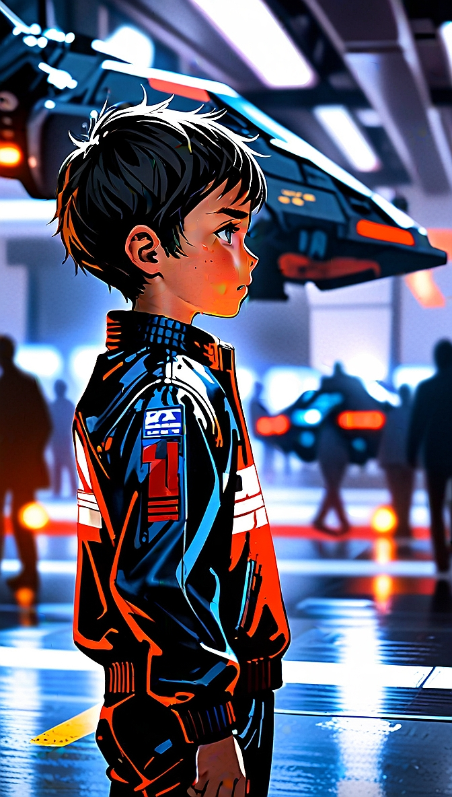
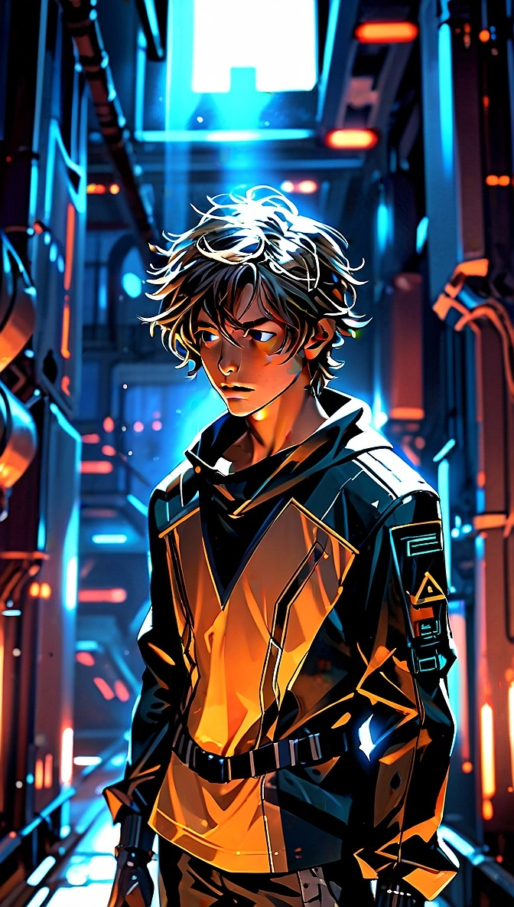
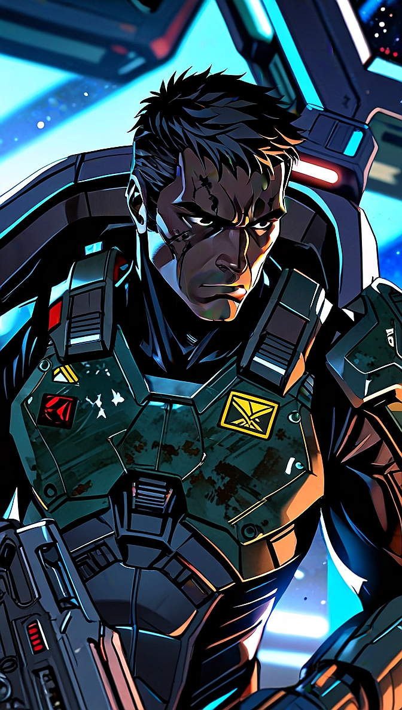
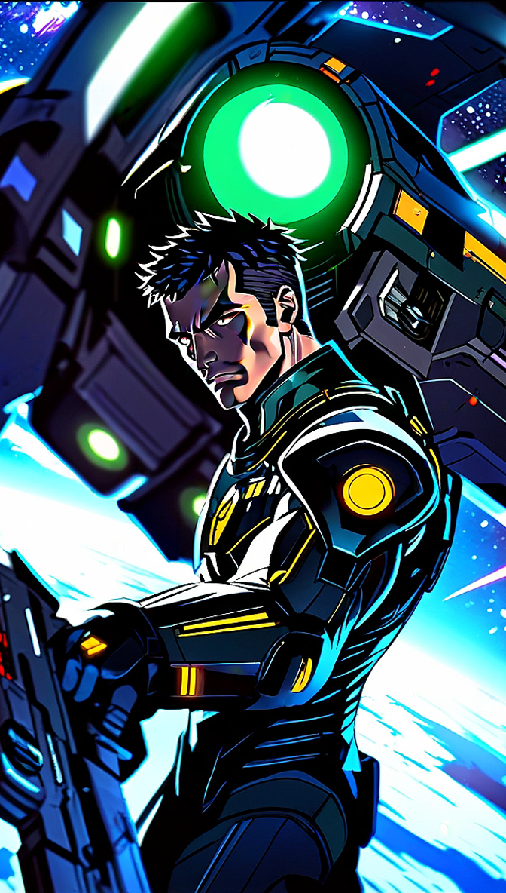

Infanzia - ERA I

3286 - Paddock della scuderia
Nato sul pianeta New Solace, nel sistema federale di Barnard's Star, Moon Starlight crebbe in una famiglia legata alla Federazione. Fin da bambino sviluppò una grande passione per le competizioni automobilistiche, distinguendosi come uno dei giovani talenti delle Galaxy Race Junior a bordo della sua Mamba.
Il suo futuro cambiò quando uno scandalo di corruzione legato all'amministrazione di Zachary Hudson travolse la famiglia Starlight.
I suoi genitori tentarono di metterlo in salvo, ma Moon venne catturato e deportato nella colonia penale di Yu Relay, lasciandosi alle spalle la vita e i sogni che aveva costruito e il suo destino futuro.
Adolescenza - ERA II

3294 - Moon e la prigione nello Yu Relay
L'adolescenza di Moon Starlight iniziò nelle fredde strutture dello Yu Relay, una colonia penale dove fu costretto a sopravvivere tra violenza e disperazione, lontano dalle competizioni che avevano segnato la sua infanzia. Qui incontrò Zeltharian Warden, un altro giovane prigioniero con cui sviluppò un legame basato su fiducia, rispetto e determinazione.
Durante l'assalto Thargoid allo Yu Relay, i due riuscirono a fuggire a bordo di una capsula di salvataggio, cambiando per sempre il loro destino. Dopo il recupero imperiale, Moon intraprese un percorso di addestramento militare per affinare le sue abilità di pilota e trasformare il talento del passato in una nuova possibilità di libertà.
Adulto - ERA III

3310 - Moon vice comandante PEG

3312 - Moon e Codename: Tactical Takedown
Gli anni successivi videro Moon Starlight affermarsi come uno dei piloti più talentuosi dell'Impero. L'esperienza maturata nelle competizioni giovanili e nelle missioni sul campo gli permisero di affrontare incarichi sempre più complessi, costruendo una reputazione fondata su precisione, affidabilità e sangue freddo. Dietro ogni successo rimaneva però il ricordo dello Yu Relay e dell'amicizia nata in quegli anni difficili, un legame che avrebbe influenzato il suo futuro.
Il destino riportò Moon al fianco di Zeltharian Warden quando quest'ultimo iniziò a riunire comandanti guidati dagli stessi ideali. Riconoscendo nell'antico compagno di prigionia il leader che aveva imparato a rispettare nei momenti più bui, Moon scelse di seguirlo contribuendo alla nascita dei Phoenix Elite Group (PEG) e alla creazione di una nuova famiglia basata su lealtà e fratellanza.
All'interno dei PEG divenne rapidamente uno dei comandanti più fidati di Zeltharian. La sua esperienza, la rapidità decisionale e il controllo nelle situazioni critiche lo resero fondamentale durante operazioni militari, missioni di scorta e campagne contro la minaccia Thargoid. Pur senza cercare la gloria personale, il suo contributo fu spesso decisivo nei momenti più delicati, diventando un punto di riferimento per molti piloti.
La guerra contro i Thargoid ebbe per Moon un significato profondo. Ogni battaglia riportava alla memoria la perdita della famiglia e gli anni della prigionia, trasformando il suo impegno non in una ricerca di vendetta, ma nella volontà di proteggere altri innocenti dallo stesso destino che aveva segnato la sua giovinezza.
Oltre al campo di battaglia, Moon contribuì alla crescita della comunità PEG, affiancando i nuovi piloti e trasmettendo la propria esperienza alle generazioni future. Il giovane pilota delle Galaxy Race Junior era ormai diventato un veterano rispettato, simbolo di lealtà, coraggio e fratellanza.
Oggi Commander Moon Starlight continua a servire i Phoenix Elite Group con la stessa dedizione di sempre. La sua storia rappresenta il percorso di un uomo che ha trasformato una vita segnata da perdita e prigionia in un esempio di forza e determinazione. Se Zeltharian è il fondatore della visione PEG, Moon è uno dei pilastri che hanno permesso a quella visione di diventare realtà, custodendone i valori e guidando i nuovi comandanti.